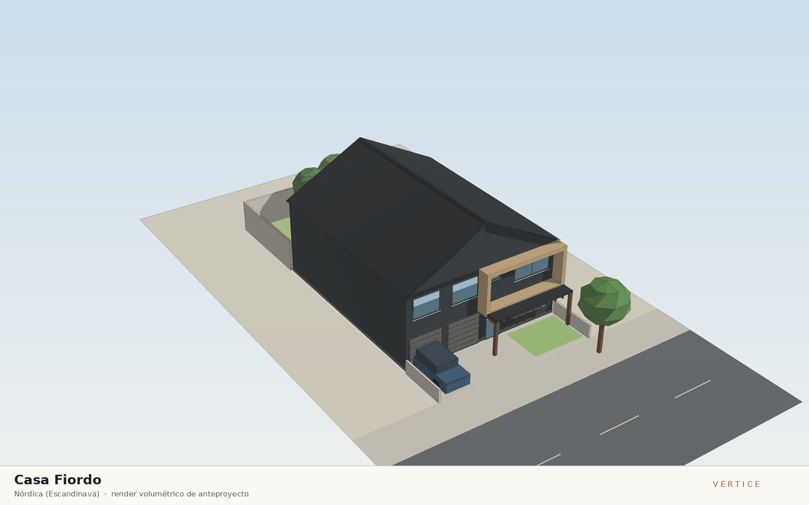
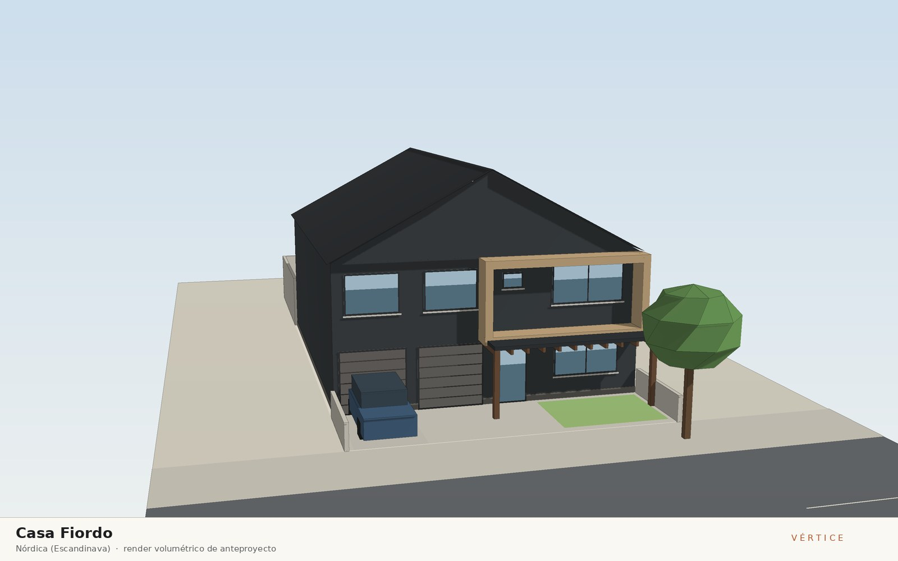
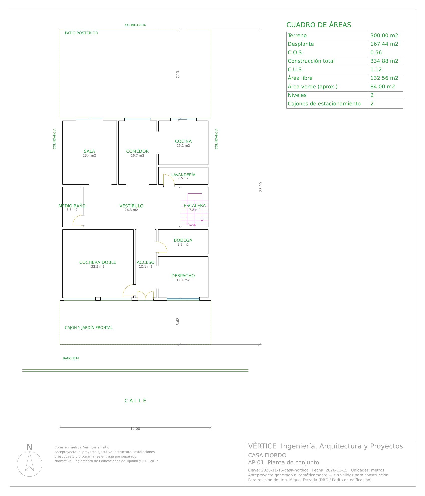
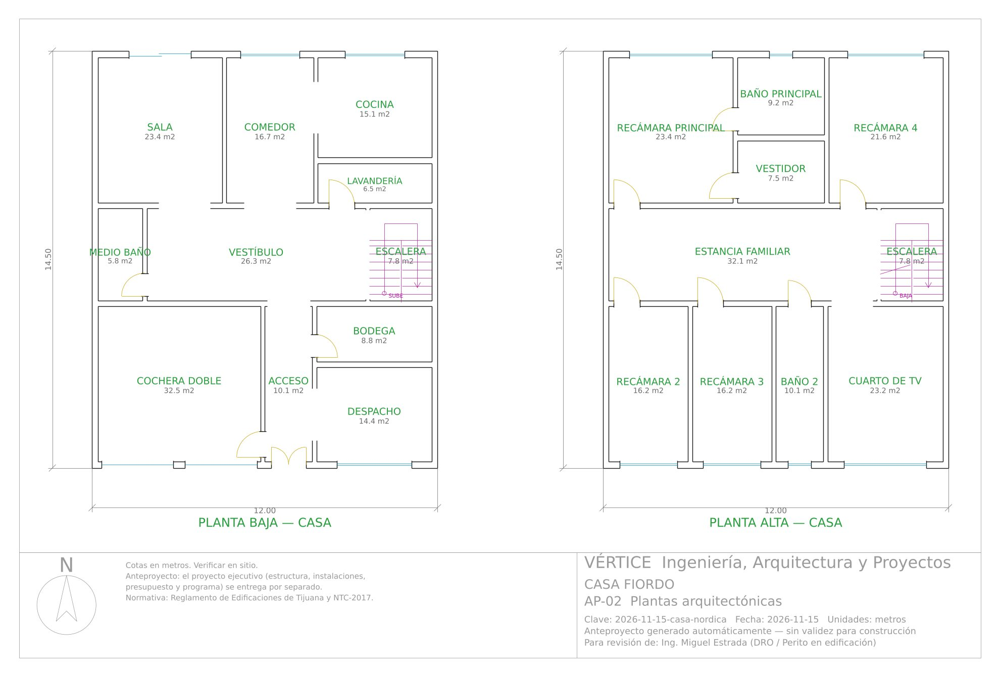
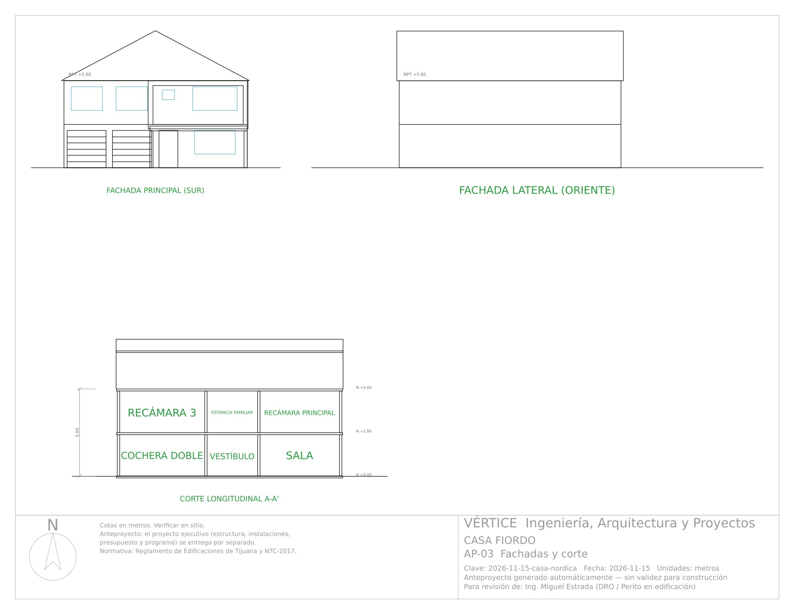

15 de noviembre de 2026 · Casa habitación
Casa Fiordo
Corriente: Nórdica (Escandinava)

Concepto
Vivienda nórdica de dos niveles en un lote de 12 x 25 m: un volumen puro de fachada oscura coronado por una cubierta metálica a dos aguas de pendiente pronunciada y sin aleros, como una casa de pescadores del norte trasladada a la costa del Pacífico. La pendiente fuerte desaloja con rapidez las lluvias concentradas de invierno y el ático ventilado bajo la lámina aísla la planta alta del sol de mediodía; el revestimiento oscuro se compensa con una cámara de aire ventilada detrás del entablado. Al frente, un porche de madera clara marca el acceso y da sombra a la puerta, y un marco volumétrico de madera termotratada natural enmarca la planta alta como un mirador, que da calidez a la fachada oscura y sombrea las ventanas de las recámaras; dentro, pisos y plafones de madera clara y vanos alineados norte-sur para la ventilación cruzada con la brisa marina.
Dictamen del arquitecto
- Terreno de 12.00 x 25.00 m (300 m²); casa de 11.75 x 14.25 m a ejes en 2 niveles, 334.9 m² construidos con desplante de 167.4 m²: COS 0.56 y CUS 1.12 (por verificar con el PDU de Tijuana). Jardín frontal y cajón de 3.62 m, cochera doble techada de 32.5 m² (5.80 x 5.60 m, 2 cajones ≥ 2.50 x 5.00) con dos portones seccionales de 2.50 m y patio posterior de 7.13 m al que se sale de la sala por el cancel corredizo P-4 de 2.15 m.
- Lenguaje nórdico: volumen puro con cubierta de lámina engargolada a dos aguas de 54 % de pendiente (cumbrera a +8.80 m, hastiales a la calle y al patio) sin aleros: el motor ahora respeta el rasgo sin_alero de la corriente y deja sólo 0.15 m para el canalón en A-04, A-05, A-06, render, captación pluvial y presupuesto. Entablado de madera termotratada gris carbón sobre cámara ventilada (127.6 m² en fachadas sur, norte y hastiales), marco volumétrico de madera natural en planta alta (18.99 ml) y porche de madera en el acceso; colindancias oriente y poniente ciegas.
- Recorrido: puerta doble de encino P-3 de 1.20 m bajo el porche → acceso (10.1 m²) con paso a cochera, despacho (14.4 m²) y bodega (8.8 m²) → vestíbulo (26.4 m²) con medio baño (5.8 m², extractor obligatorio por estar en colindancia), lavandería (6.5 m²) y escalera en U → sala (23.4 m²), comedor (16.7 m²) y cocina (15.1 m²) comunicados al norte. Escalera de 2 tramos de 8 peraltes, ancho 1.15 m, peralte 17.5 cm, huella 29.0 cm (2p+h = 64 cm).
- Planta alta: estancia familiar (32.1 m²) que reparte a recámara principal (23.4 m²) con baño (9.2 m²) y vestidor (7.5 m²) propios y recámara 4 (21.6 m²) al norte; recámaras 2 y 3 (16.2 m², 2.90 x 5.60 m, con clóset), baño 2 (10.1 m², con ventila) y cuarto de TV (23.2 m²) al sur. Todas las recámaras ≥ 2.70 m de lado con ventana al exterior; altura libre 2.67 m en ambos niveles (≥ 2.30 m).
- Ajustes en esta revisión: se descartó el muro de acento porque la fachada sur (dos portones, acceso y ventanas) no deja un paño ciego ≥ 0.90 m en toda la altura y se sustituyó por el marco de madera. Motor: (1) sin_alero se ignoraba y la cubierta nórdica salía con 0.60 m de alero; (2) el marco volumétrico se presupuestaba siempre con aplanado y pintura aunque el spec pidiera madera; (3) el revestimiento exterior de madera de los materiales no se cuantificaba; ahora entra en 'Por cotizar' (sólo vanos exteriores descontados).
Dictamen de ingeniería
- Veredicto: construible conforme a norma — 0 errores y 0 avisos en 29 verificaciones de coordinación (aviso arquitectónico atendido: extractor en el medio baño), sujeto a los supuestos indicados abajo. El ciclo de coordinación ajustó el proyecto: vanos abiertos entre locales limitados a 1.80 m y muros X en block de 20 cm (Y en 15 cm); 2 muros de planta alta sin apoyo continuo quedan como divisorios ligeros de tablaroca.
- Mampostería confinada (Q = 1.5): castillos K-1 15x20 (58 en planta baja y 54 en planta alta), dalas de desplante y cerramiento y 14 trabes, entre ellas T-1 30x50 (5 #6, L = 5.60 m, Mu 20.4 t·m) de carga sobre la cochera doble y cerramientos de 15x30 a 20x30 cm. Método simplificado NTC: X VR 82.6 t ≥ Vu 71.7 t (margen 15 %, el más justo; no abrir vanos adicionales en muros X sin revisar); Y VR 107.8 t ≥ 71.7 t; V basal 65.2 t con c = 0.213 supuesto y T = 0.18 s.
- Losas macizas de 13 cm en entrepiso (≥ 12.7 cm, wu = 968 kg/m²) y azotea (≥ 12.1 cm, wu = 699 kg/m², incluye 30 kg/m² de la cubierta), #3 @ 20 general con bastones en apoyos; escalera de losa de 14 cm, #3 @ 15. La cubierta de lámina engargolada al 54 % va sobre armadura ligera de PTR anclada a la losa de azotea; el anclaje de la armadura contra viento (CFE Viento 2020) lo detalla el corresponsable.
- Zapatas corridas B = 50 cm, h = 20 cm, #4 @ 33: ZC-1 perimetral (q = 5.56 t/m², excéntrica en linderos oriente y poniente) y ZC-2 interior (q = 8.35 t/m²) contra una q adm supuesta de 12 t/m²: requiere estudio de mecánica de suelos y confirmar el espectro sísmico del sitio. Cuantificación: 6,504 kg de acero (19.4 kg/m²) y 78.0 m³ de concreto.
- Instalaciones: 22 UM (1.21 L/s), alimentación Ø25 mm, cisterna de 2 m³ con hidroneumático 1/2 HP y calentador de paso a gas; 25 UD, bajadas del baño principal (a comedor) y del baño 2 (a acceso) junto a muro, colector Ø100 mm PVC al 2 % a la red CESPT; captación de 175 m² (cubierta con canalón de 53.2 ml), 4.9 L/s a 2 bajadas Ø100 mm (≈ 9 L/s); 18 circuitos (15,978 W instalados, 11,185 W de demanda, 56.5 A), interruptor general 2P-100 A, desbalance 1.1 %; gas LP con tanque estacionario de 500 L en el patio, ventilado y a más de 3 m de flamas. Factibilidades de CESPT y CFE por tramitar.
- Presupuesto de $1,814,458 + IVA ($1,959,615 con IVA fronterizo; $5,418/m²) y programa de 22 semanas (131 días hábiles); cubierta de lámina (199.7 m²), revestimiento de madera (127.6 m²), marco de madera (18.99 ml), porche, portones, cocina integral y cancelería quedan entre las 41 partidas de la hoja "Por cotizar" hasta tener cotización de proveedores de Tijuana.
Materiales
Muros de block de concreto con revestimiento exterior de entablado de madera termotratada teñida gris carbón sobre bastidor y cámara ventilada; marco volumétrico de planta alta forrado de madera termotratada de pino natural; cubierta de lámina metálica engargolada color grafito sobre estructura ligera con aislante térmico, sin aleros; porche de madera laminada; cancelería de aluminio negro con vidrio doble claro; puerta de acceso de madera de encino; piso de ingeniería de madera de roble claro en ambos niveles y porcelanato antiderrapante gris claro en baños
Vistas

Anteproyecto — descargas
Láminas del anteproyecto






Proyecto ejecutivo
Proyecto ejecutivo completo — 17 láminas. Se entrega por separado; no se publica en esta galería.
Revisión de coordinación arquitectura–estructura–instalaciones–acabados y normativa: Sin errores · 0 avisos en 29 verificaciones.
Arquitectónico
- A-01 Planta de conjunto
- A-02 Plantas arquitectónicas amuebladas
- A-03 Plantas acotadas a ejes
- A-04 Planta de azotea
- A-05 Fachadas
- A-06 Cortes arquitectónicos
- A-07 Cancelería y acabados
Estructural
- E-01 Planta de cimentación
- E-02 Losas, trabes y castillos
- E-03 Detalles estructurales
- E-04 Cuantificación de acero y concreto
Instalaciones
- IH-01 Instalación hidráulica
- IS-01 Instalación sanitaria y pluvial
- IE-01 Instalación eléctrica
- IG-01 Instalación de gas LP
- IH-02 Isométrico hidráulico
- IE-02 Cuadro de cargas y diagrama unifilar
Incluye: Memoria técnica (Word/PDF) · Presupuesto (Excel) · Programa de obra (Excel y Gantt) · Juego de planos (PDF y DXF)
Revisión de calidad
Sin errores · 1 avisos
| Tipo | Nivel | Observación |
|---|---|---|
| Aviso | Casa · Planta baja | Medio baño: ventilación mecánica (extractor) obligatoria. |
Cuadro de áreas
Ver los 21 espacios
| Bloque | Nivel | Espacio | Medidas (m) | Área (m²) |
|---|---|---|---|---|
| Casa | Planta baja | Cochera doble | 5.80 x 5.60 | 32.48 |
| Casa | Planta baja | Acceso | 1.80 x 5.60 | 10.08 |
| Casa | Planta baja | Despacho | 4.15 x 3.47 | 14.41 |
| Casa | Planta baja | Bodega | 4.15 x 2.13 | 8.83 |
| Casa | Planta baja | Medio baño | 1.70 x 3.40 | 5.78 |
| Casa | Planta baja | Vestíbulo | 7.75 x 3.40 | 26.35 |
| Casa | Planta baja | Escalera | 2.30 x 3.40 | 7.82 |
| Casa | Planta baja | Sala | 4.46 x 5.25 | 23.44 |
| Casa | Planta baja | Comedor | 3.17 x 5.25 | 16.66 |
| Casa | Planta baja | Lavandería | 4.11 x 1.57 | 6.48 |
| Casa | Planta baja | Cocina | 4.11 x 3.67 | 15.11 |
| Casa | Planta alta | Recámara 2 | 2.90 x 5.60 | 16.24 |
| Casa | Planta alta | Recámara 3 | 2.90 x 5.60 | 16.24 |
| Casa | Planta alta | Baño 2 | 1.80 x 5.60 | 10.08 |
| Casa | Planta alta | Cuarto de TV | 4.15 x 5.60 | 23.24 |
| Casa | Planta alta | Estancia familiar | 9.45 x 3.40 | 32.13 |
| Casa | Planta alta | Escalera | 2.30 x 3.40 | 7.82 |
| Casa | Planta alta | Recámara principal | 4.46 x 5.25 | 23.44 |
| Casa | Planta alta | Vestidor | 3.17 x 2.36 | 7.50 |
| Casa | Planta alta | Baño principal | 3.17 x 2.89 | 9.16 |
| Casa | Planta alta | Recámara 4 | 4.11 x 5.25 | 21.59 |
Anteproyecto conceptual generado por el motor Vértice. El predimensionamiento estructural y los cálculos de instalaciones son preliminares y no sustituyen la memoria de cálculo definitiva, el estudio de mecánica de suelos ni la revisión y firma del DRO y corresponsables.